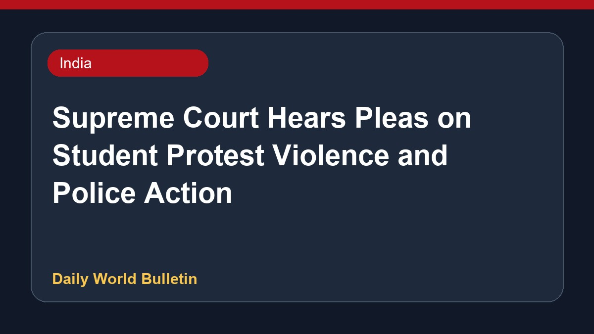

Supreme Court Hears Pleas on Student Protest Violence and Police Action

The Supreme Court is hearing a batch of petitions concerning police action and violence during student protests regarding paper leaks, alongside related public interest litigations. During the proceedings, the bench clarified that states hold the authority to withdraw First Information Reports against students in accordance with the law. Furthermore, the Court observed that neither police officers employing excessive force nor individuals engaging in criminal protests should be protected. The hearings also encompass matters regarding accountability concerning demonstrations near Parliament and Jantar Mantar.
Original source: India News Sources
Student Protest Violence : Live Updates From Supreme Court Hearing - Live Law ↗
Student Protest Violence : Live Updates From Supreme Court Hearing - Live Law ↗